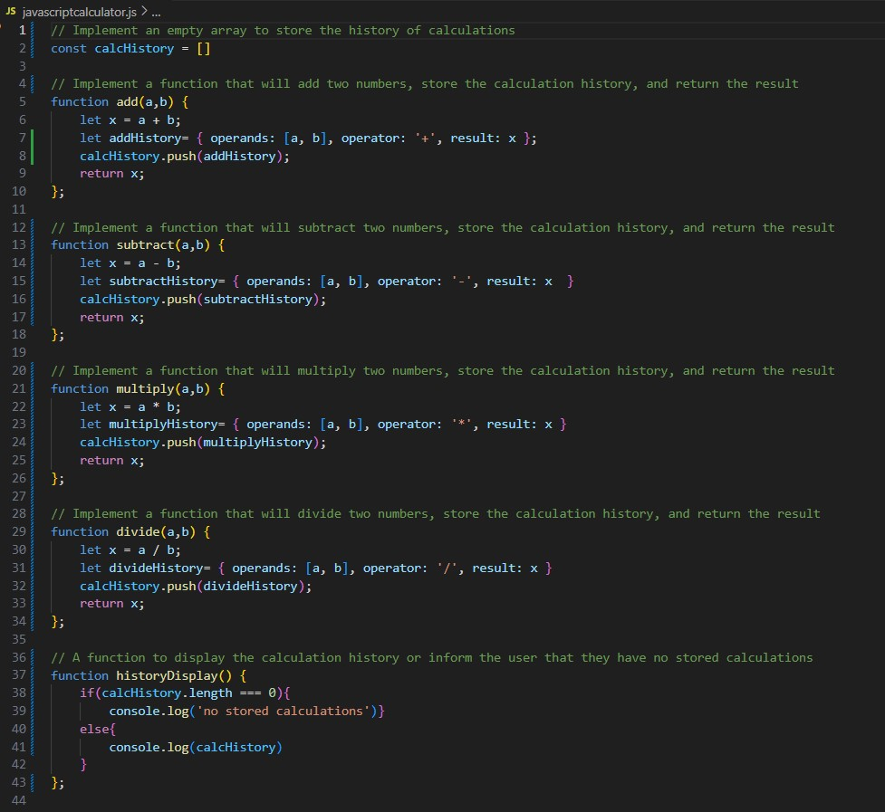
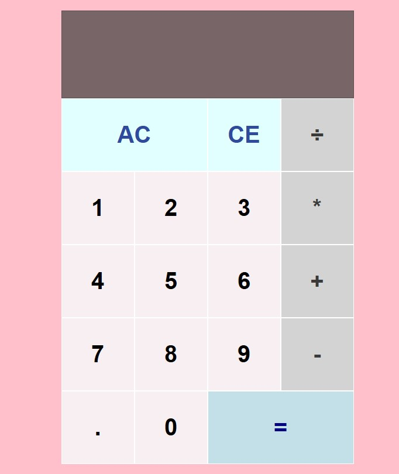

About Me
Thank you for visiting my personal website. Currently, I am located in the foothills of the Wasatch Mountains, Utah.
I love my family, science, skiing, and being in the mountains. The order tends to change depending on the snow conditions.
In 2014, I recieved a doctorate from Montana State University in Chemistry. For my dissertation, I investigated
the toxicity mechanisms of depleted uranium found in drinking water on a molecular level. My research utilized Computational
Chemistry coupled with in vitro experimentation to elucidate potential interactions with certain protien configurations within the
human body. Upon graduation, I worked as a Visiting Assistant Professor of Inorganic Chemistry at Westminster College in Salt
Lake City. In 2017, I took the opportunity to give back to my beloved Wasatch Mountains and went on the become
the Education Director for the Cottonwood Canyons Foundation non-profit. In this role, I standardized the Environmental Education
curriculum for the Unita-Wasatch-Cache National Forest Service and partnering non-profits. When the global pandemic hit in 2020,
I was six months pregnant with my daughter and made the decision to pivot to a stay-at-home-mother. Since then, I have been enjoying
the rewarding task of parenting while working part-time as a ski mountaineering coach. As I transition back to fulltime work, I am
updating my skillset by taking a Software Engineering Bootcamp at Flatiron School.
Skills: Basic Javascript, Basic HTML, CSS, UV-Vis, Mass Spectromentry, Computational Chemistry software, General Chemistry, Education best practices
Projects
Simple JavaScript Calculator Program
For a summative lab in the Software Engineering Bootcamp at Flatiron School, I was tasked with
creating a JavaScript program that simulates a calculator capable of performing basic operations and keeping track
of all calculations made. The program implements functions for addition, subtraction, multiplication, and division. It then stores
each calculation's details into an array and displays the history of the calculations to the user.

Basic JavaScript Calculator
To further my programing skills, I went on to create a basic calculator in HTML, CSS, and JavaScript without using the eval()
function. The calculator performs basic operations and outputs the result into a display. There is additonally a functional
All Clear (AC) and Clear Entry (CE) button.

Try it out!